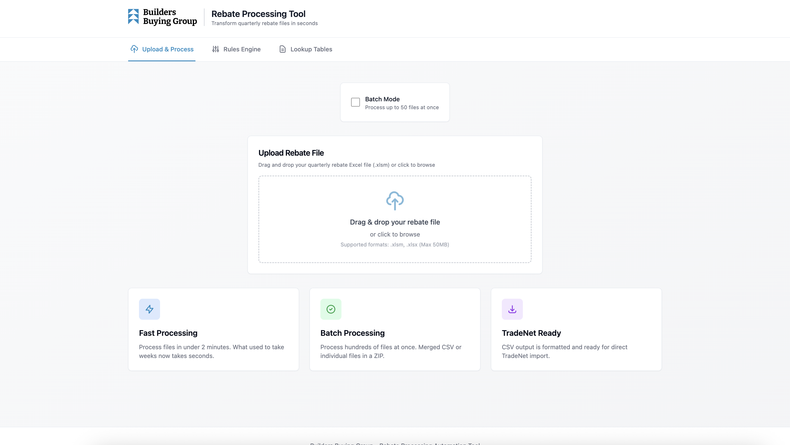
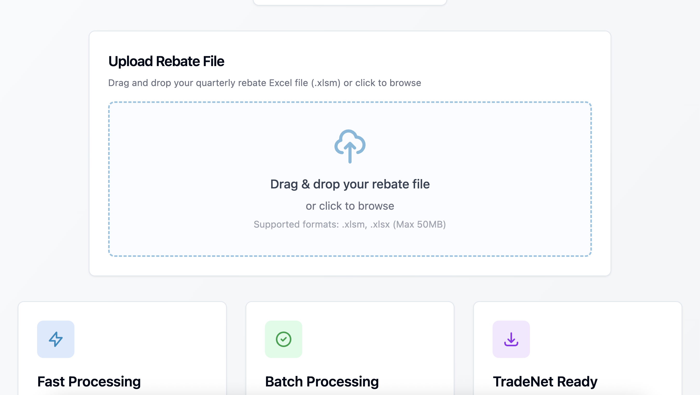
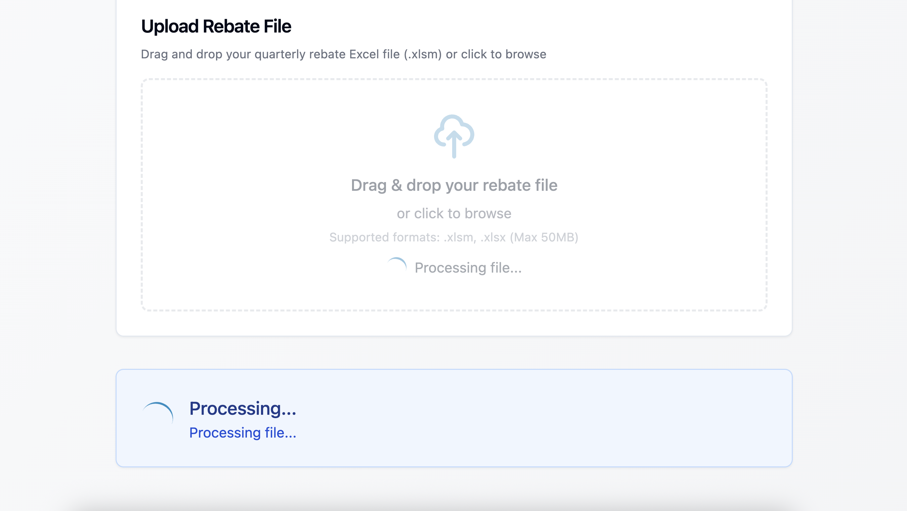
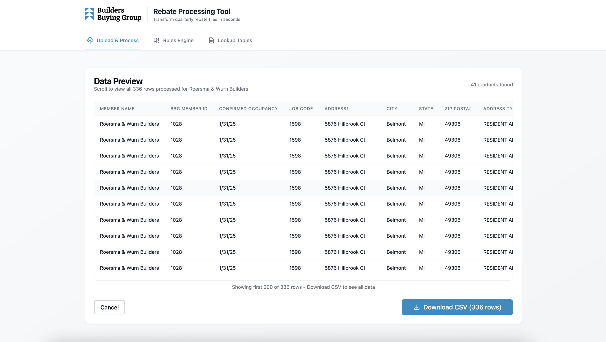
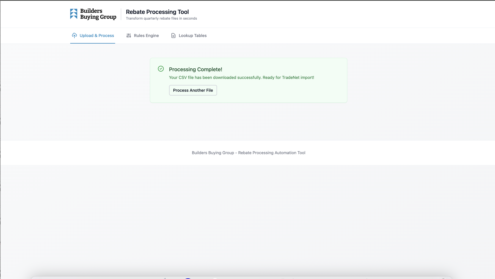
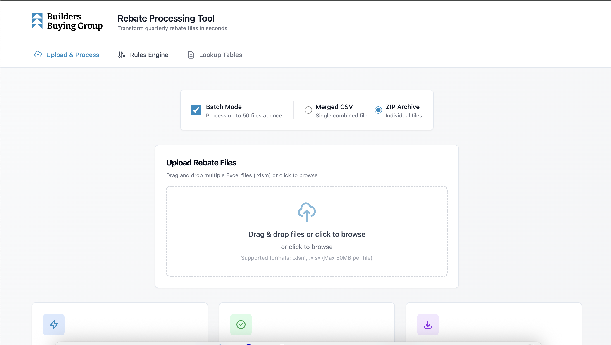

Getting Started¶
This guide will help you access and start using the BBG Rebate Processing Tool for the first time.
Accessing the Tool¶
The tool runs as a web application in your browser. Your IT administrator will provide you with the URL.
Typical URL format:
Simply open this URL in your web browser. We recommend using: - Google Chrome (recommended) - Microsoft Edge - Firefox
First Look¶
When you open the tool, you'll see the main interface with three tabs at the top:

1. Upload & Process Tab¶
This is where you'll spend most of your time. Use this tab to upload Excel files and download the processed CSV files.
2. Rules Engine Tab¶
View and manage business rules that control how supplier names are mapped. You'll rarely need to change these unless directed by management.
3. Lookup Tables Tab¶
Manage the member and supplier directories. You may need to update these when new members join or supplier information changes.
Your First File Upload¶
Let's process your first rebate file:
Step 1: Prepare Your File¶
Make sure you have a quarterly usage reporting Excel file (.xlsm format). The file should be the standard BBG rebate template that members submit.
Step 2: Go to Upload & Process Tab¶
Click on the Upload & Process tab (should be selected by default).
Step 3: Upload Your File¶
You have two ways to upload:
Option A: Drag and Drop 1. Drag your Excel file from your computer 2. Drop it into the upload area
Option B: Click to Browse 1. Click on the upload area 2. Browse to select your file 3. Click "Open"

Step 4: Process the File¶
- After the file uploads, click the Process & Preview button
- Wait a few seconds while the file is processed
- You'll see a loading indicator with a spinner

Step 5: Review the Preview¶
Once processing completes, you'll see: - Member name and ID at the top - Total number of rows processed - A scrollable table showing all the data - Summary statistics

Step 6: Download Your CSV¶
- Review the preview to make sure everything looks correct
- Click the Download CSV button
- The file will download to your default downloads folder
- The filename will be automatically generated based on the original file name

Step 7: Import to TradeNet¶
The downloaded CSV is now ready to import directly into TradeNet. Follow your normal TradeNet import procedures.
Processing Multiple Files (Batch Mode)¶
If you have several files to process at once:
Step 1: Enable Batch Mode¶
- Check the Batch Mode checkbox above the upload area
- Choose your output format:
- Merged CSV: All files combined into one CSV
- ZIP Archive: Individual CSVs bundled in a ZIP file

Step 2: Select Multiple Files¶
- Click the upload area
- Hold Ctrl (Windows) or Cmd (Mac) to select multiple files
- Or drag and drop multiple files at once
- Maximum 50 files per batch
Step 3: Process Batch¶
- Click Process & Preview [X] Files (for merged) or Process & Download [X] Files (for ZIP)
- Wait for processing to complete
- For merged CSV, review the preview before downloading
- For ZIP mode, the file downloads automatically
Understanding the Interface¶
Color Codes¶
- Blue: Primary actions and active elements
- Green: Success messages and completed actions
- Red: Errors and warnings
- Yellow: Warnings that don't prevent processing
Status Messages¶
- Processing...: The system is working on your file
- Processing Complete!: Success, your file is ready
- Processing Error: Something went wrong (see error message for details)
Buttons¶
- Process & Preview: Analyze the file and show results
- Download CSV: Save the processed file to your computer
- Process Another File: Start over with a new file
System Requirements¶
Browser¶
- Modern web browser (Chrome, Edge, Firefox)
- JavaScript enabled
- Cookies enabled
Files¶
- Excel files in .xlsm or .xlsx format
- Maximum file size: 50MB
- Standard BBG rebate template format
Internet Connection¶
- Required to access the tool
- Stable connection recommended during file processing
What Happens to My Files?¶
When you upload a file: 1. It's temporarily stored on the server for processing 2. The data is extracted and transformed 3. The CSV is generated 4. After download, cached files are automatically cleaned up
Your files are not permanently stored on the server. They exist only during the processing session.
Next Steps¶
Now that you know the basics:
- Read the User Guide for detailed instructions on all features
- Learn about Lookup Management if you need to update member or supplier directories
- Review the Rules Engine to understand how business rules work
- Check the Troubleshooting Guide if you run into issues
Need Help?¶
- Check the FAQ for common questions
- Review the Troubleshooting Guide for error solutions
- Contact your IT administrator
- Email the development team
Ready to start? Head to the User Guide for complete usage instructions.